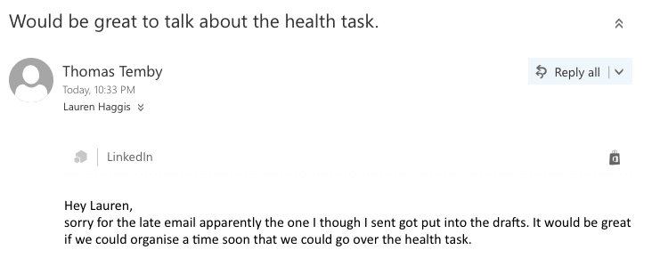

Although literacy is used everyday and is used in and out of school it is hard to determine where. The obvious ones are school assignments because it is rare that an assignment does not have some form of literacy even if it is a maths SAT I have to comprehend the text to a level that I can answer the question correctly. The same thing is applied to every assignment I have to be able to understand what I have to do and this often requires me to understand text.
Like all capabilities all the subcategories overlap although in literacy it is even more so. All literacy components are a combination of word and grammar knowledge and can be backed up through visuals if there is a need for it. An example of where I have displayed all of the subcategories is my film analysis of my Friend The Atom. In the analysis I use word and visual knowledge when both developing and analysing the text then composed my own film in response. Below is the video.
Numeracy covers many different aspects of mathematics one of the coolest ones I have shown is my ability of spacial reasoning, In order to show this I have developed multiple 3d models. I use 3d modelling for many different things although I mainly design objects with a function the first one (Image below with the graphite) shows a model I designed in order to improve the layout of my desk. To design this I needed to use my ability of spacial reasoning to design something that would fit well on my desk and still do the function.
I see patterns everyday not only in my learning but also extra-curricular activities. In school there are lots of patterns as to when different assignments are due and the work we have to do in each lessons. By recognising these patterns I can develop my skills more specific to each lesson improving my ability work effectively. outside of school patterns are a lot harder to recognise although in refereeing there are lots of small patterns that improve my development. By understanding the patterns in human behaviour I can get a better idea of what happened and what call to make.
There are no specific examples of the other subcategories of numeracy although I do show them through school and on occasion when shopping or playing games with friends. below are a few of the things that demonstrate the other categories.
Counting Cans
VideoGames (keeping track of cooldowns)
Refereing soccer
Maths folios
3D designing
Critical and Creative Thinking
In order to program you first have to decide what your going to program by doing this I pose a question about what I want to program and the decide the best way of going about it. This requires you to identify and clarify how these ideas will work and what information you need to get a result. For a program to work efficiently the process needs to be organised.
When Programming I use out of the box thinking because of the massive range in how it is possible to solve the problem. When programming there are multiple things that go wrong and to get over these obstacles I have to ether connect previous ideas or consider alternatives in how to solve the problem. The whole point of programming is to find something that will be useful or fun. During the process of programming I’ve made many mistakes and in doing so I needed to find were I made the mistake and find the solution.
In order to increase my knowledge about programming I consistently reflect about what I have done and compare it to similar programs. This enables me to improve my current programs and any future programs I write. In order for me to do this I often comment my code and use git hub that enables me to see what changes I have made previously. The other thing I do that improves my programs is to get feedback. In order for more people to use my programs I need to make it so that people want to use it one of the easiest ways to do this is through the amount of features it has.
When programming I consistently have to apply my own reasoning and logic and design the best course of action to compleat the task I want. To do this I have to reflect on previous work to improve the program I’m currently working on evaluating the procedure I took and what outcomes I have achieved.
Personal and Social
The personal and social capability is commonly used when working in a group or when trying to organise yourself in order to increase you productivity. This capability is shown throughout school life by doing group tasks that are common in ASMS. In order to go above and beyond in this capability I have done two things that show my social awareness and management.
Having a year 9 buddy is not only a great way to show my social management but it also mean I need social awareness in order to understand when they need help, when their bored or even when not to interrupt them. My social management is show because not only do I have to manage the tasks my buddy is doing but I also have to make sure I stay on task and do my work. I also need to be able to keep track of were my buddy is if they want to go off with friends at recess and lunch.
Above is a picture of me taking teachers from other schools though our school and explaining the differences between how we get taught here compared to other schools. By taking teachers through our school it shows that I can manage a group of people. In order to avoid disrupting other classes I needed to take the teachers through the school in such a way we weren’t disrupting other classes but also in a way I could talk and answer questions. Their main purpose was to visit the ideation room which is another place I show a great amount of personal and social skills.
Because in the ideation room there is a lot of high end expensive equipment there is very little room for people to make mistakes this means that the teachers have to monitor and do almost everything. Although this makes sense there are cases were there are 4 students that want to do something but only 2 teachers to do it. In order to get around this problem there are a few students that get taught how to properly use the equipment meaning they can then assist other students. Because I am one of these students I have to be aware of whats happening around me incase anyone needs help or is doing something wrong.
In Sustainable Futures for an assignment we did earth summit. Earth summit covered a lot of different capabilities although the biggest one is ethical understanding. The main focus on earth summit was an ethics question were we had to consider who it would benefit and how much. It covered a big ethical issue that is world hunger and went at it in a way that was supposed to be ethical although looking into the solution it was unethical. To come to this solution an understanding had to be developed and through this understanding reason and make a decision of if the proposal should or should not go through. Through earth summit I developed my ability to explore the values of the proposal and the responsibilities of not only my country but others.
Intercultural Understanding
I have developed a great Intercultural Understanding over the years due to many experiences. Last year there were a number of international students that visited Australia. My family hosted Kayleigh from England, this let me have a great insight into other cultures. The second international student I am friends with is Timo who was from Germany. When talking with people from over seas you find out more about their culture and life style. by visiting other countries I was able to get an understand of how important the religion is by visiting temples in Japan I got to understand how large their religion was.
At the start of International Science Fair a group of aboriginal dancers came in. When they asked for volunteers to come up and try the dance I thought it would be interested to get an idea of their culture so I decided to try it. By doing this I got a great understanding of not only the difficulty but also what each part of the dance symbolises.
Information and Communications Technology (ICT)
Information and communications technology is a very important and useful tool to be able to use. It covers almost anything that is electronic meaning it includes your laptop and phone. I personally use it everyday in order to teach myself new skills, talk to friends and even to communicate with teachers if I have a question regarding an assignment. One of the main things I use ICT for is to learn almost any new skill. When I was first learning to juggle I had someone that knew how to juggle teach me although when I wanted to learn tricks I had to teach myself in order to get a better understanding on how to do these tricks I used youtube clips and websites. I also used websites to teach me how to code java and html (I’m using html right now for this website). I also use ICT when I need to find information for a new assignment even if I borrow a book from the library I use a computer in order to find were the book is located in the libraryThe second thing that has shown my understanding is my learning of programming. Many people used a site like google site or weebly, although some of these people don’t have time to code it themselves a lot of them don’t want to put the time in to teach themselves a more complex way of making a website like html and java script and choose to learn a different skill by using a more simple way.This is an image of the code of my website if you wish to see the full code you can find it HERE The final example I’m going to use is my communication with teachers. When I have needed help with a specific aspect of an assignment. I also do all my assignments on google docs enabling me to easily share my teacher in when I need to hand it up or if I want someone to prof read it I can simply share them in instead of printing it out or handing it to them on a usb.
Above is an example of me using ICT to communicate with my teachers in order to reflect on an assignment
In order to get a better understanding of my goals I decided to make an infographic:
This infographic has for major and two minor goals the minor goals I plan to have finished at the end of the semester the major ones at the end of the specified time. In order to make sure I have compleated these goals I have come up with a statagey for each of them.
Fix Up ePortfolio
In order to keep my ePortfolio up to date when I get feedback on one of my assignments I will then write a reflection on it in for my ePortfolio. The reflection will have 3 basic questions which are; What did I do right, what did I do wrong and What could I improve.
Get straight A's
In order to help me achieve straight A's I have a few strategies the first one being; reflect on old work. In order to increase the level I complete my work I need to look back at my old work and find out what I did wrong in order to achieve a higher mark for other assignments. The second strategy is to use class time as effectively as possible. In order to achieve a high standard I need to ask the teacher for help this is impossible when I am at home doing it the night before. Finally my last strategy is when drafting it draft it against the rubrik. There have been many assignments were I missed something on the rubrik because I forgot to add which could have easily been fixed if when originally drafted it was drafted against the rubrik
Become an Elite Referee
This goal is something that will take time to complete although there are already a few strategies I have come up with in order to complete it. The first thing I need to do is attend training seminars in order to increase my knowledge of the game as well as getting more practice. Secondly I need to referee higher-level games and get good relationships with other referees. Finally when he option comes to go up a level of referee do it as soon as possible to decrease the time it takes to achieve this goal.
Juggle and solve three Rubik’s cubes
Although this goal is silly i seems like something fun to do and something that not many people can. This goal only has one real strategies and that is practice. In order to make sure I practice it is one of the first things I do on Saturday, for an hour.


 Above is a picture of me taking teachers from other schools though our school and explaining the differences between how we get taught here compared to other schools. By taking teachers through our school it shows that I can manage a group of people. In order to avoid disrupting other classes I needed to take the teachers through the school in such a way we weren’t disrupting other classes but also in a way I could talk and answer questions. Their main purpose was to visit the ideation room which is another place I show a great amount of personal and social skills.
Above is a picture of me taking teachers from other schools though our school and explaining the differences between how we get taught here compared to other schools. By taking teachers through our school it shows that I can manage a group of people. In order to avoid disrupting other classes I needed to take the teachers through the school in such a way we weren’t disrupting other classes but also in a way I could talk and answer questions. Their main purpose was to visit the ideation room which is another place I show a great amount of personal and social skills. The final example I’m going to use is my communication with teachers. When I have needed help with a specific aspect of an assignment. I also do all my assignments on google docs enabling me to easily share my teacher in when I need to hand it up or if I want someone to prof read it I can simply share them in instead of printing it out or handing it to them on a usb.
The final example I’m going to use is my communication with teachers. When I have needed help with a specific aspect of an assignment. I also do all my assignments on google docs enabling me to easily share my teacher in when I need to hand it up or if I want someone to prof read it I can simply share them in instead of printing it out or handing it to them on a usb.